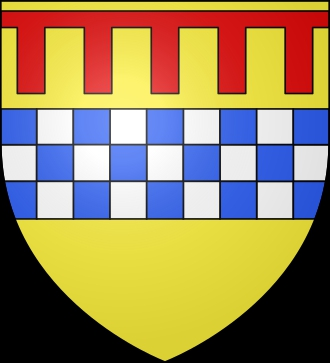

Antavla
3004475 Lady Margret of Menteith
Blev ca 48 år.

Far:
Alexander (Stewart) of Menteith (1240 - <1306)
Mor:
Matilda of Strathearn (1230? - )
Född:
omkring 1276 Scotland.
[1]
Död:
omkring 1324 Scotland.
[1]
Barn med
3004474 Sir Alexander Abernethy (1273? - <1315)
Barn:
Mary Abernethy (1289? - <1335)
Personhistoria
Årtal
Ålder
Händelse
1276?
Födelse omkring 1276 Scotland
[1]
1289?
Dottern
1502237 Lady Mary Abernethy
föds omkring 1289 Scotland
[1]
1310?
Barnbarnet
751118 Lord Walter Leslie of Leslie
föds omkring 1310 Leslie Castle, Aberdeenshire, Scotland
[1]
1324?
Död omkring 1324 Scotland
[1]
Källor
[1]
Wikitree